功能：全局游戏时间并将其输出到屏幕上
首先创建UI，将对局时间定义为变量。我们设计
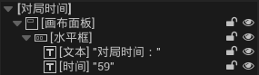所以需要全局计时器有两个输出：分钟、秒钟。
实际上，时间并不需要设计为“是变量”，因为这个东西可以直接绑定（在文本的右面）。
我们选择创建绑定，此时输出的值是文本类型的返回值。
为了能在外面对UI的相关内容进行修改，需要在UI中手动创建变量，将变量设置为“可编辑实例”和“生成时公开”。
这样CreateWidget节点就会变
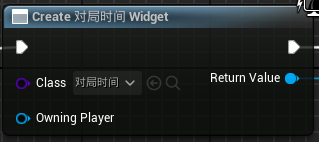 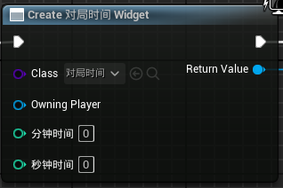现在我们创建了两个变量：分钟时间和秒钟时间。
数据传输机制是：外面的数据--》CreateWidget参数--》数据显示绑定
接下来我们要把创建的变量，将它们的值格式化成时间格式
字符串拼接：Append节点
确保显示的某个int数值至少两位，不足两位，则在前补0：ToText节点。需要将节点展开。
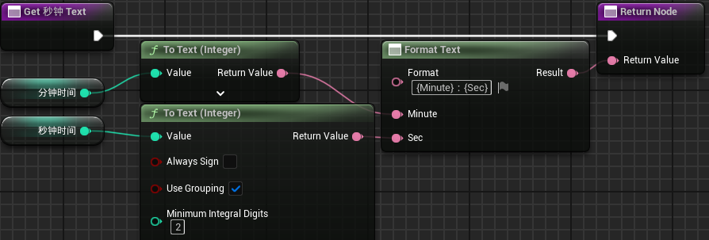注意：FormatText节点的Format参数是：{Minute}：{Sec}。关注花括号。这是用于格式化文本的。
为了防止CreateWidget时重复创建导致重影，同时为了防止CreateWidget后不能刷新，需要
以事件设置定时器
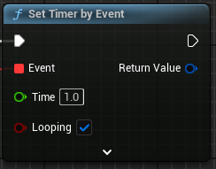每隔1s触发一次，Looping=TRUE则可重复触发/p>
每次触发执行的事件，就是Event事件。这里创建自定义事件
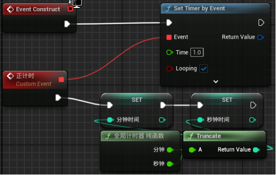上述节点族在UI事件图表中实现
因为要统计的是游戏时间，所以在关卡蓝图中
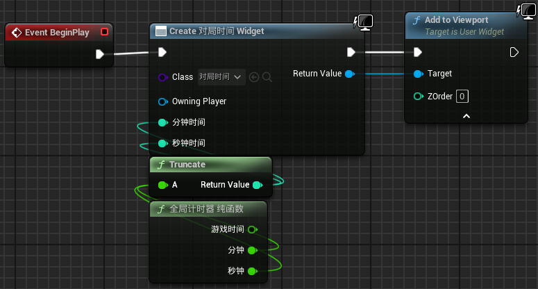 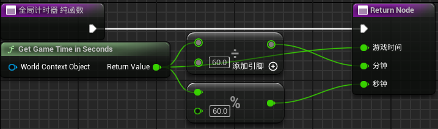对于全局计时器同理。我们创建一个Actor类蓝图，创建三个变量，对这三个变量进行设置。
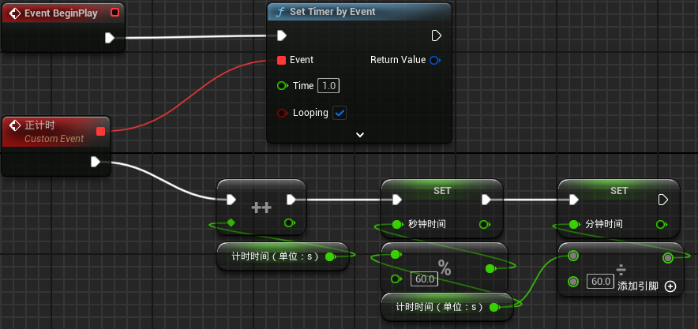注意，这个方法如果要提升精度，需要修改SetTimerByEvent的Time参数
计时器验证
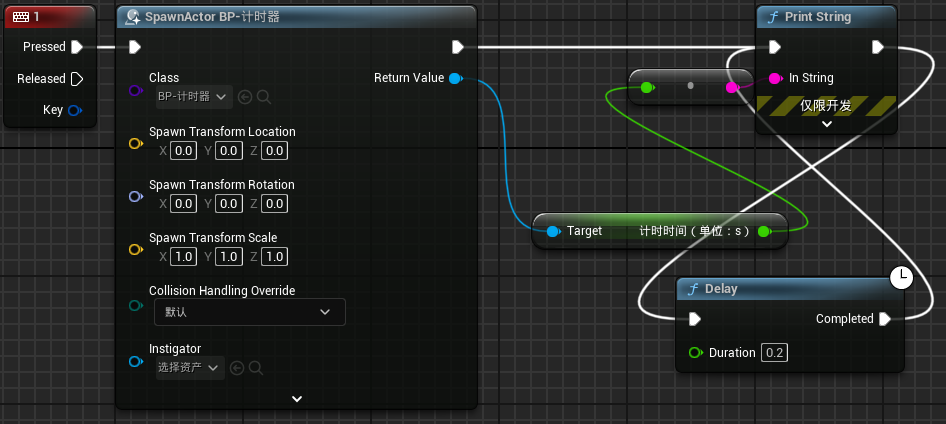使用计时器时需要注意，应当定时Destroy Actor。
定时器需要我们传递进去定时时间。设计定时时间格式为：分钟、秒钟
创建三个int型变量，定义可编辑实例和生成时公开。这样当SpawnActor时就可以传递定时时间。
创建一个bool型变量表示是否计时结束。该变量默认值为false，且不需要可编辑实例和生成时公开。
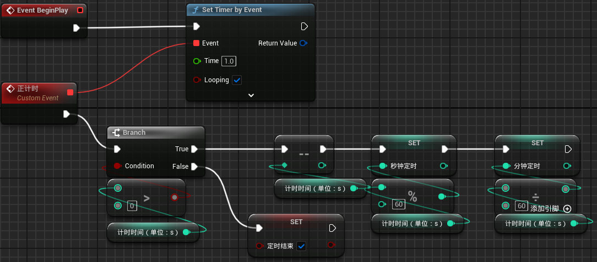定时器验证
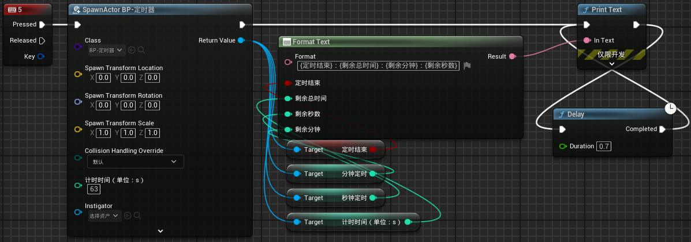同时需要在构造函数中进行初始化
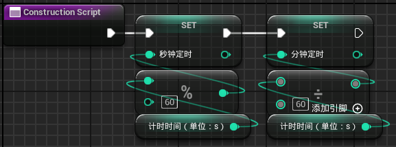生成定时器后，记得销毁